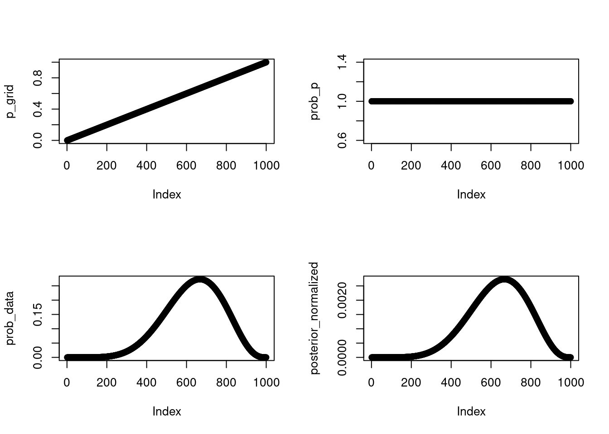
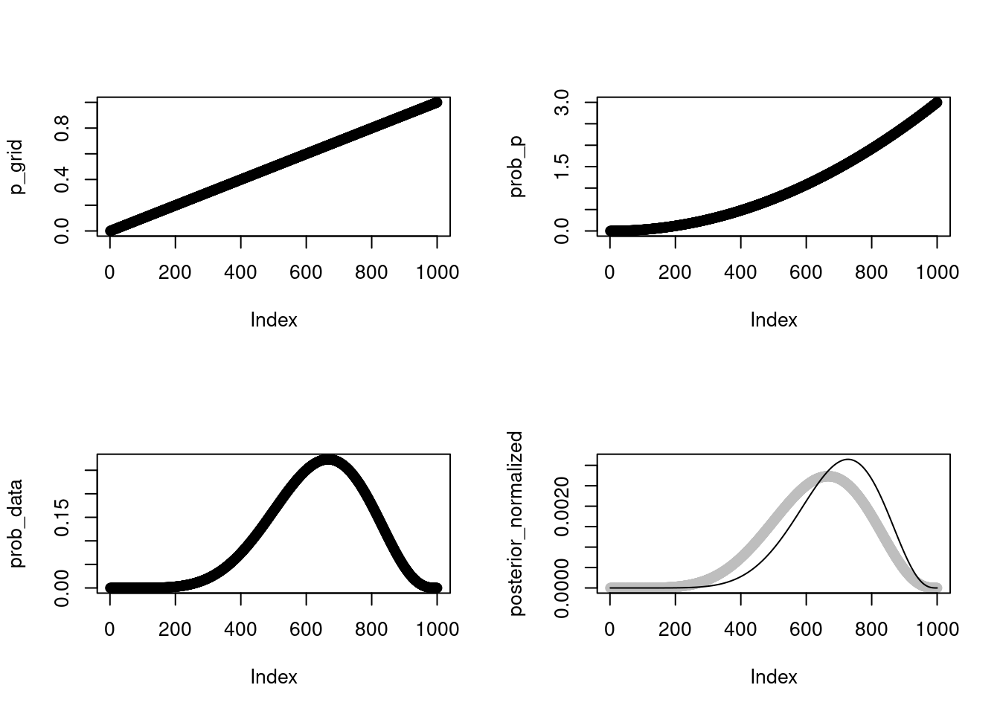

Chapter 2 Lecture 02
2.1 What proportion of the surface is covered with water?
2.2 Bayesian data analysis
For each possible explanation of the data
2.3 Globe tossing
2.3.1
- No point estimate
The distribution is the estimate
Always use the entire distribtution
- No one true interval
Intervals communicate shape of posterior.
50% and 89% are just arbitrary numbers used.
95% is obvious superstition. Nothing magical happens at the boundary.
None of this is logical. It’s just conventions.
2.3.2 Letters from my reviewers
“The authors uses these cute 89% intervals, but we need to see the 95% intervals so we can tell whether any of the effects are robust.”
That an arbitrary interval contains an arbitrary value is not meaningful. Use the whole distribtution. The intervals are just for a short summary of the distribution.
2.4 Formalities
The observations (data) and explanations (parametrers) are variables.
For each variable, must say how it is generated.
- Data: W and L, the number of water and land obervations
\[ \operatorname{Pr}(W, L \mid p)=\frac{(W+L) !}{W ! L !} p^{W}(1-p)^{L} \] \[ \operatorname{Pr} (W, L \mid p) = \frac{(W + L)!} {W! L!} p^{W} (1-p)^{L} \]
Binomial probability function:
\[ \text { dbinom (} W, W+L, p) \]
# x: vectior of quarantines
# size: number of observations
# p vector of probabilities
# p(x) = choose(n, x) p^x (1-p)^(n-x)
# for x = 0, …, n. Note that binomial coefficients can be computed by choose in R.
dbinom(6, 9, 0.7)## [1] 0.2668279- Parameters: p, the proportion of water on the globe
Relative plausibility of each possible \(p\)
\[ \operatorname{Pr} (p) = \frac{1} {1-0} = 1 \]
Posterior is (normalized) product
\[ \operatorname{Pr} (p \mid W, L) = \frac{\operatorname{Pr} (W, L \mid p)\operatorname{Pr}(p)} {\operatorname{Pr} (W, L)} \]
For each possible value of \(p\), to get the probability of that \(p\) conditional on W and L
\(\operatorname{Pr} (W, L)\) is the normalization constant
- With number
For each possible value of p, compute
2.5 Grid approximation
p_grid <- seq(from = 0, to = 1, length.out = 1000)
prob_p <- rep(1, 1000)
prob_data <- dbinom(6, 9, prob = p_grid)
posterior <- prob_data * prob_p
posterior_normalized <- posterior / sum(posterior)par(mfrow=c(2,2))
plot(p_grid)
plot(prob_p)
plot(prob_data)
## Probability distribution
plot(posterior_normalized)
p_grid <- seq(from = 0, to = 1, length.out = 1000)
prob_p <- dbeta(p_grid, 3, 1)
prob_data <- dbinom(6, 9, prob = p_grid)
posterior <- prob_data * prob_p
posterior_normalized_beta <- posterior / sum(posterior)
par(mfrow=c(2,2))
plot(p_grid)
plot(prob_p)
plot(prob_data)
## Probability distribution
plot(posterior_normalized, col="gray",
ylim=c(0,max(posterior_normalized, posterior_normalized_beta)))
lines(posterior_normalized_beta)